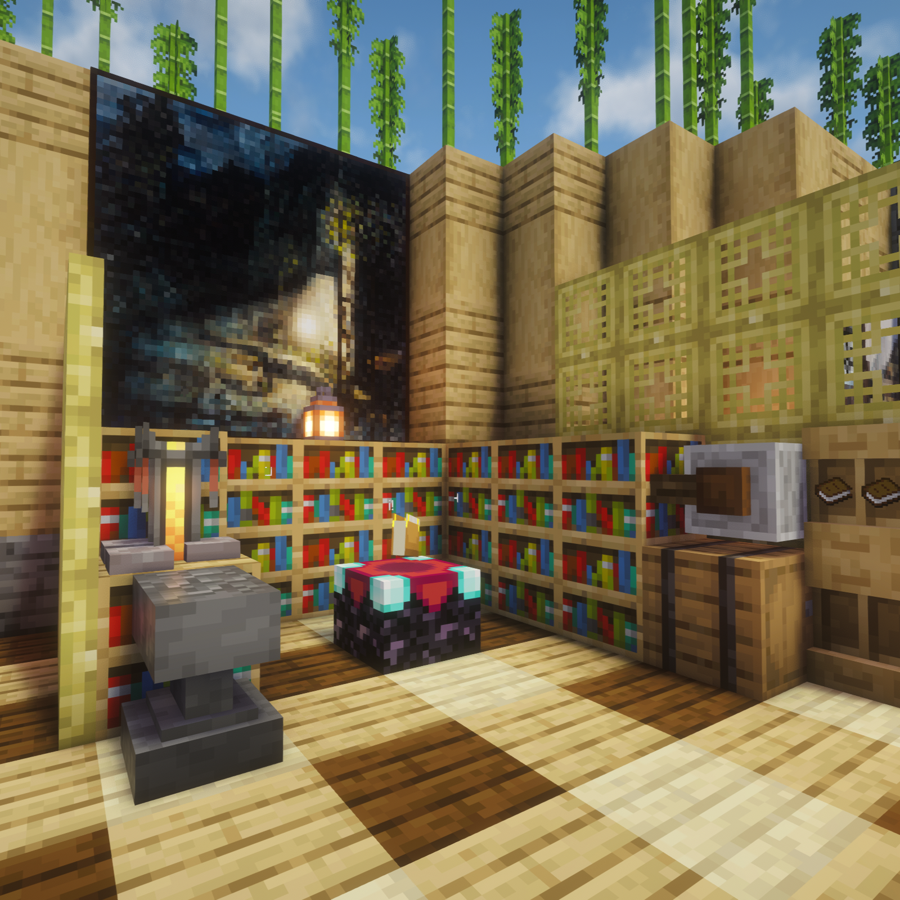
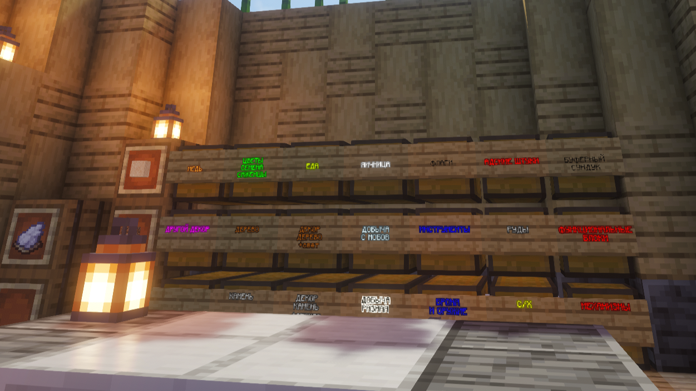
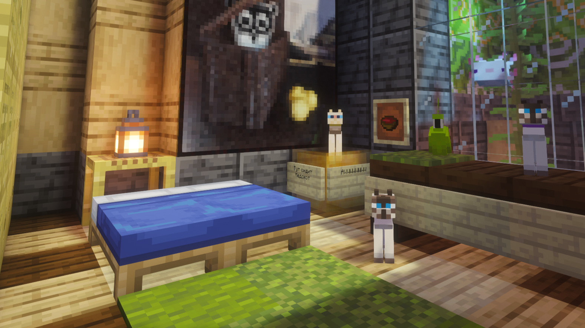
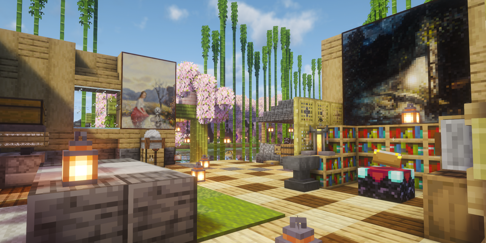
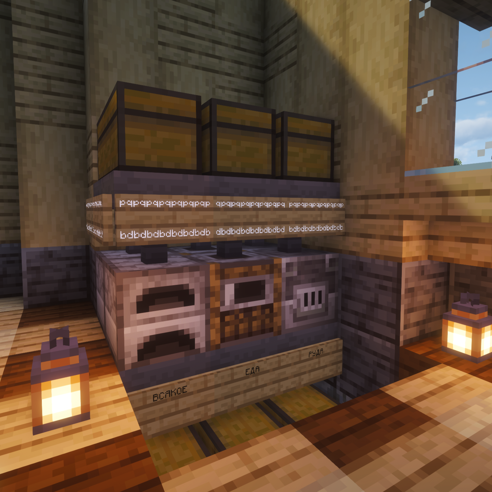
Едиственный мост, ведущий с базы на материк.
Изначально был дубовым, но в ходе открытий территорий Леса Сакур и Бамбуковых Джунглей был адаптирован в общую стилистику базы.
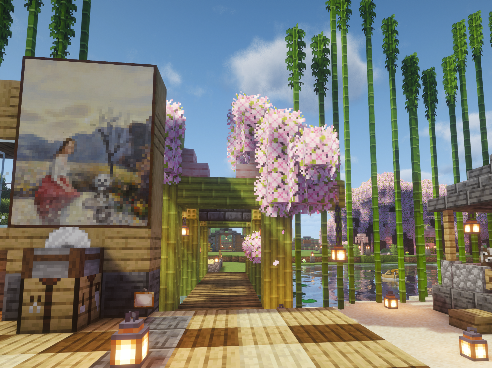
Подробнее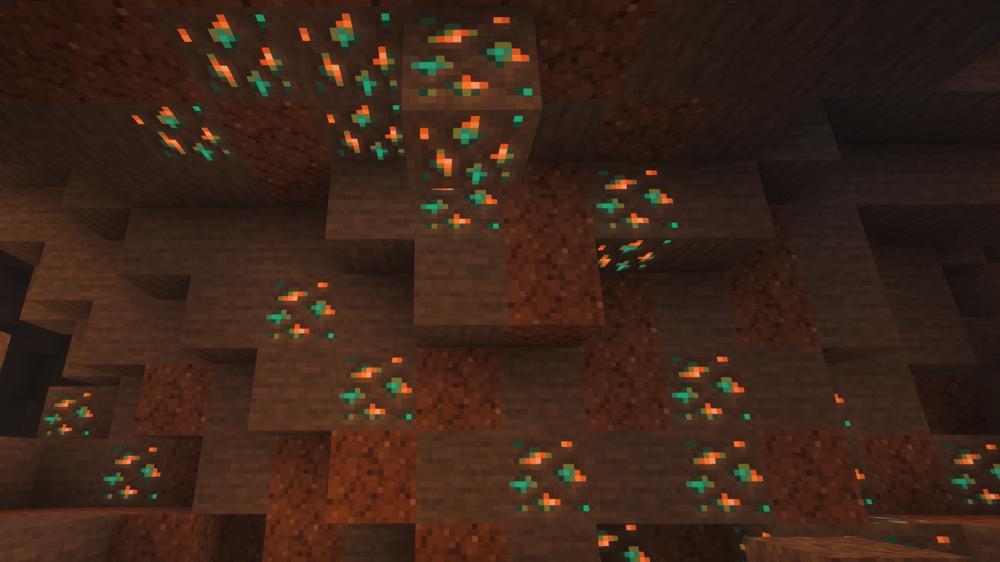
Достопримечательность, находящаяся 50 блоков ниже базой и протяженностью около 400 блоков.
Подробнее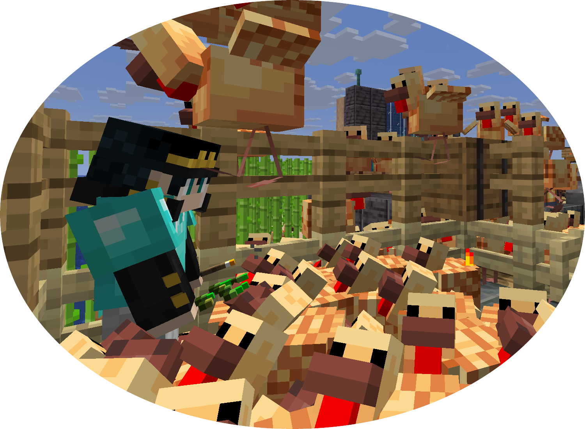
Спустя одно нашествие куриц было принято решение расформировать данную ферму.
ПодробнееПолностью автоматическая ферма куриц. Обеспечивает сервер жаренной едой.
Подробнее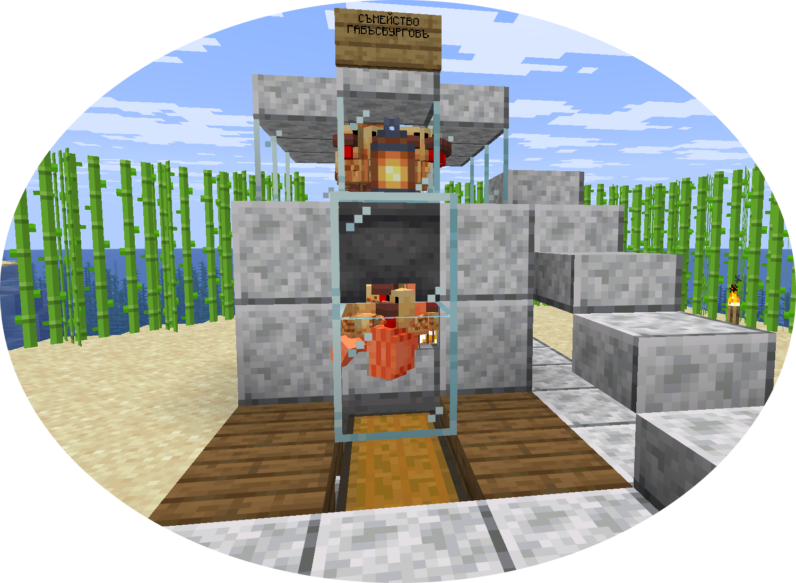
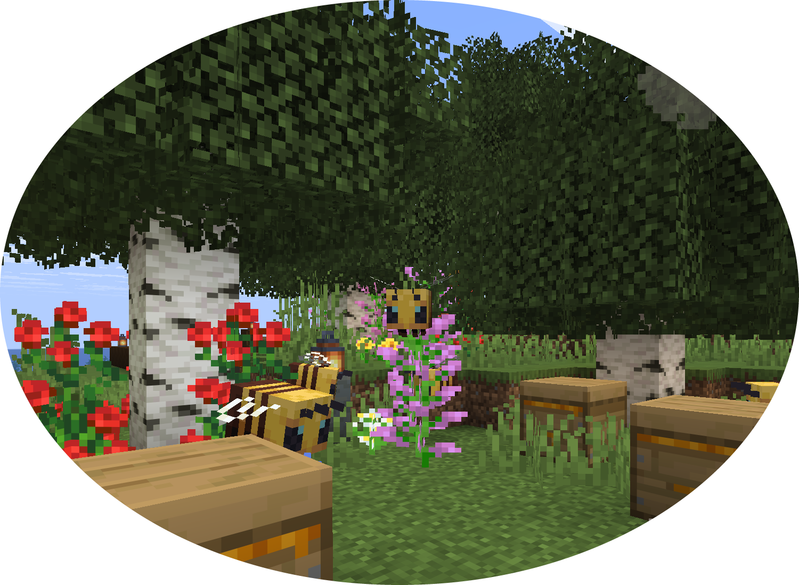
Здесь производится самый вкусный мёд. Говорят, что именно в таком сидит легендарный Медокот.
Подробнее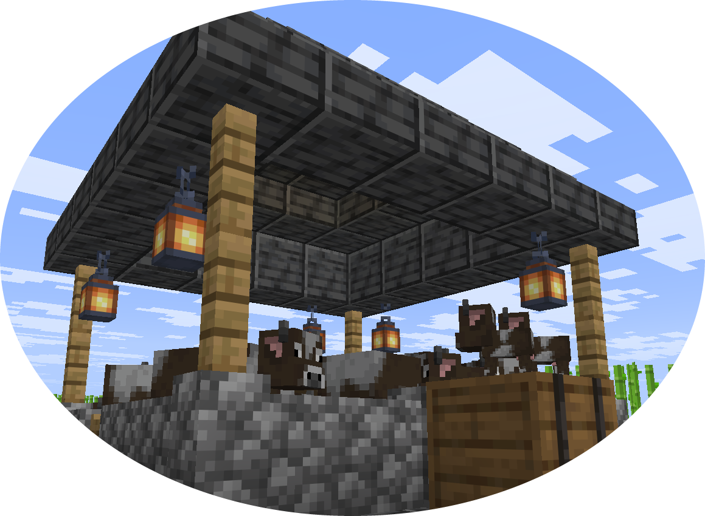